Green offset: x=5, y=2
Red offset: x=12, y=3
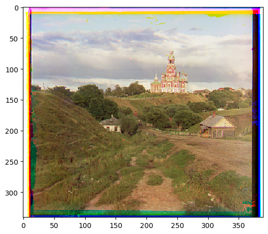Green offset: x=25, y=4
Red offset: x=58, y=-4
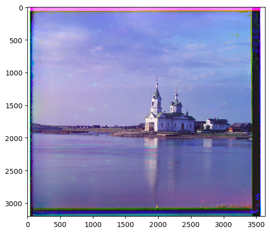Green offset: x=49,y=24
Red offset: x=100,y=-205
This image did not come out as well as the other ones and was not properly aligned. I am not sure why this particular picture failed when the other larger images were successfully aligned.
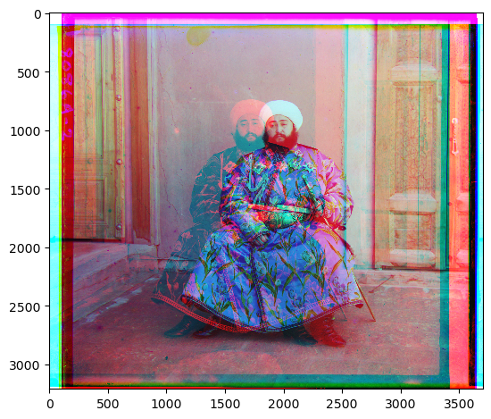Green offset: x=60,y=17
Red offset: x=124,y= 14
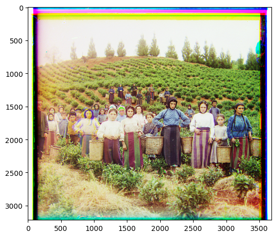Green offset: x=41,y=17
Red offset: x=90,y= 23
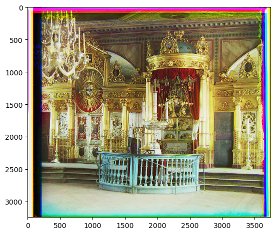Green offset: x=52,y=9
Red offset: x=112,y= 12
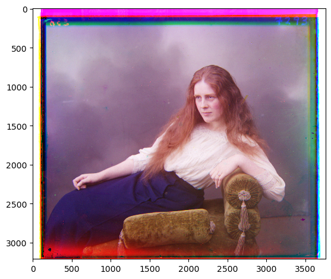Green offset: x=82,y=10
Red offset: x=178,y= 13
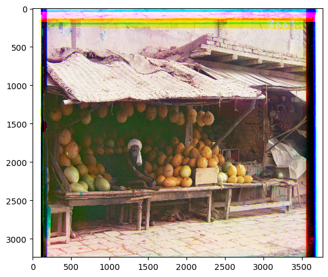Green offset: x=-3,y=2
Red offset: x=-3,y=2
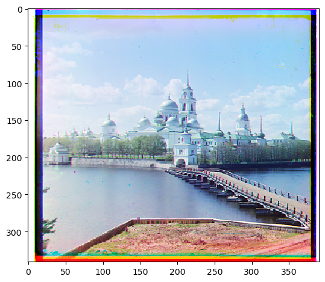Green offset: x=52,y=26
Red offset: x=108,y= 36
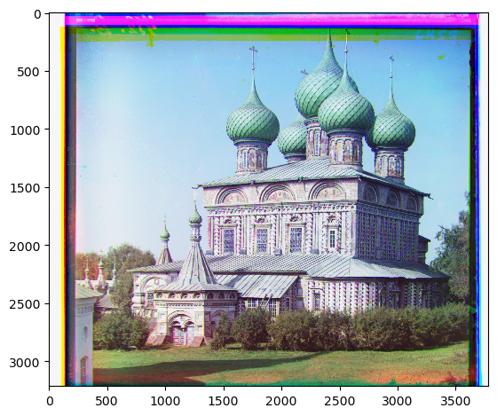Green offset: x=33,y=-11
Red offset: x=140,y= -27
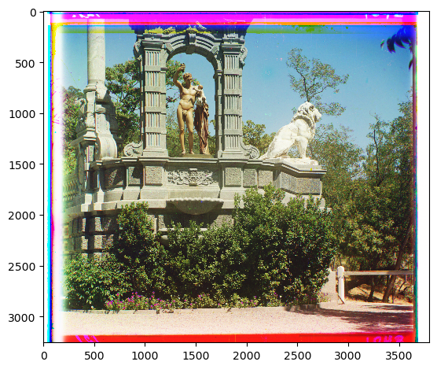Green offset: x=79,y=29
Red offset: x=176,y= 37
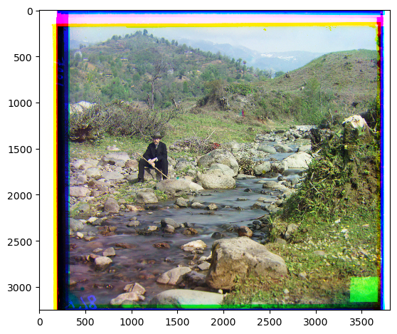Green offset: x=53,y=14
Red offset: x=112,y= 11
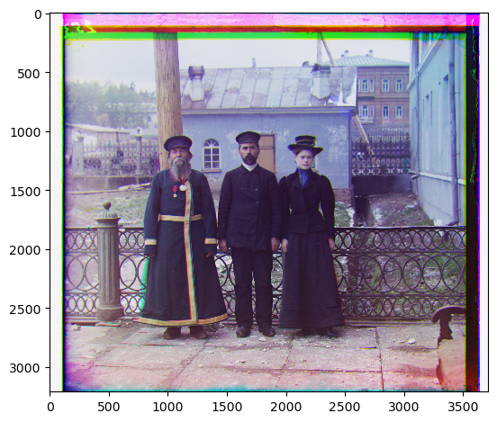Green offset: x=3,y=3
Red offset: x=6,y=3
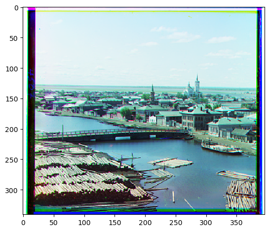Green offset: x=42,y=6
Red offset: x=87,y= 32
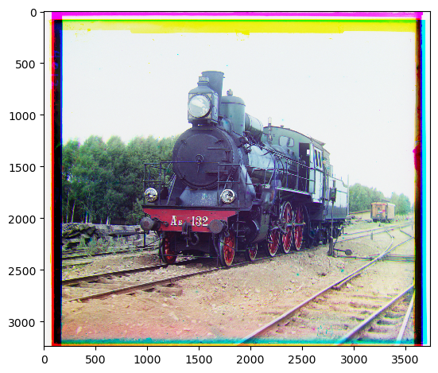